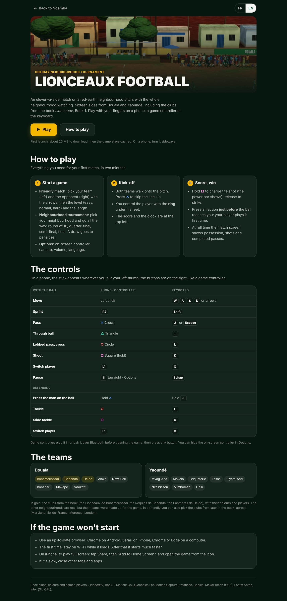

Lionceaux Football, the game
The novel’s football game, in the browser: where to find it, how to start a match, the friendly match and the neighbourhood tournament, the controls on keyboard, controller and phone, the sixteen teams from Douala and Yaoundé, what it helps children understand, and what to do if it won’t start.
8 min read
Children who read Lionceaux also play football video games. Lionceaux Football gives them a game set at home: an eleven-a-side match on a red-earth neighbourhood pitch, with the whole neighbourhood watching, during the holiday tournament between the districts of Douala and Yaoundé. The clubs from the novel are there, with their colours and their players. The game runs in the browser, with nothing to install, on a computer as on a phone. It extends the book through fun, and it keeps one Njangi idea: a player who presses their action just before the ball arrives plays it first time, like BriBri, who has already looked.
Where to find the game
The game has its own page, at /football/ on the site. There are three ways to get there:
- Football game, in the menu at the top of the public site;
- Football game, in the Me group of the app’s menu;
- the Video game section of the site’s home page, with the Play now button.

The link with the books runs through the content: the teams, colours and named players come from Lionceaux, book 1, as the bottom of the game page points out. The book pages themselves do not link to the game today; you reach it through the menus.
The game page

At the top, Back to Ndamba returns to the site’s home page, and the FR and EN buttons switch the page language. The page opens in the language chosen in Ndamba, otherwise in the browser’s. Under the large picture of the pitch, a sentence introduces the game, then come two buttons: Play and How to play, which scrolls down to the instructions. One line gives fair warning: "First launch: about 25 MB to download, then the game stays cached. On a phone, turn it sideways."
The page’s instructions come in four blocks: three steps ("Start a game", "Kick-off", "Score, win"), the controls table, the teams, and "If the game won’t start". This chapter covers all of it, along with what you then see inside the game itself.
Starting a match
- Open the game page and tap Play.
- The Lionceaux Football screen shows "Getting the pitch ready…" and a loading bar with the percentage. The first time, the download takes a while; after that, the browser keeps the game cached and it starts much faster.
- On a phone, turn the screen sideways. As long as the phone is held upright, the game shows "Turn your phone sideways" and "The game is played in landscape." On Android, the game also goes full screen when the browser allows it.
- The game’s menu appears: the LIONCEAUX title, the motto "The ball must travel." and five buttons, Friendly match, Neighbourhood tournament, How to play, Options and a language button (Français when the game is in English, English when it is in French).
- To leave at any time, tap ✕ Quit, at the top centre of the screen: you come back to the game page.
In the menu, How to play sums up every control on a single screen, adding that the on-screen controller has the same buttons. A back button returns to the menu.
Two ways to play
The friendly match
The Friendly match screen puts two panels side by side: Your team on the left, Opponent on the right. The <** and **> arrows scroll through the teams. Each panel shows the shirt, the team’s name, its neighbourhood and its level, then a line that says where it comes from: in the book, part I, chapters 1 to 8, for the Lionceaux de Bonamoussadi; "Neighbourhood side made up for the game" for Akwa.
Below the panels, two buttons change their setting each time you tap them: the difficulty (easy, normal or hard) and the length (two halves of 2, 3, 5 or 8 minutes; two halves of 3 minutes to begin with). Kick off starts the match, and the back button returns to the menu.
The neighbourhood tournament
Neighbourhood tournament first asks you to choose your team, with the same arrows. New tournament announces the first round, for example a round of 16 between the Lionceaux de Bonamoussadi and Ndokotti, and Play the match starts it. The tournament goes all the way: round of 16, quarter-final, semi-final, final. A draw goes to penalties.
The options
Options sets four things: the On-screen controller (on or off), the camera (a TV view or a close view), the volume (out of 10) and the language. So there are two places to change the language inside the game: here, or with the last button of the menu.
Kick-off
Both teams walk onto the pitch. Press ✕ (cross) to skip the line-up. You control the player with the ring under his feet. At the top left, the scoreboard shows both teams in three letters (BON for Bonamoussadi), the score and the clock; at the top right, II pauses the match. To shoot, hold □ (square): the power bar appears, and you strike when you let go. Press an action just before the ball reaches you, and your player plays it first time. At full time, the match screen shows possession, shots and completed passes.
The controls
The game can be played three ways, and all three give the same football. On a phone, you play with your fingers: the stick appears wherever you put your left thumb, and the buttons are on the right, laid out like a game controller (✕, ○, □ and △, with L1 and R2 above them). To stay smooth on the very dense screens of phones, the game caps its resolution there. On a computer, you play with the keyboard or a controller. The table shows both side by side.
| With the ball | Phone and controller | Keyboard |
|---|---|---|
| Move | Left stick | W A S D or arrows |
| Sprint | R2 | Shift |
| Pass | ✕ Cross | J or Space |
| Through ball | △ Triangle | I |
| Lobbed pass, cross | ○ Circle | L |
| Shoot | □ Square (hold) | K |
| Switch player | L1 | Q |
| Pause | II top right, Options | Esc |
| Defending | Phone and controller | Keyboard |
|---|---|---|
| Press the man on the ball | Hold ✕ | Hold J |
| Tackle | ○ | L |
| Slide tackle | □ | K |
| Switch player | L1 | Q |
To play with a game controller, plug it in or pair it over Bluetooth before opening the game, then press any button. The controller drawn on screen can be hidden in Options.
The teams
The game has sixteen teams, eight from Douala and eight from Yaoundé.
| Douala | Yaoundé |
|---|---|
| Bonamoussadi, Bépanda, Deïdo, Akwa, New-Bell, Bonabéri, Makepe, Ndokotti | Mvog-Ada, Mokolo, Briqueterie, Essos, Biyem-Assi, Nkolbisson, Mimboman, Obili |
On the page, three names are in gold: the clubs from the book, the Lionceaux de Bonamoussadi, the Requins de Bépanda and the Panthères de Deïdo, with their colours and their players. The other neighbourhoods are real, but their teams were made up for the game. In a friendly, you can also pick the clubs from later in the book, abroad: Maryland, Île-de-France, Morocco and London.
The three clubs from the book are also those of the U13 academy demo (chapter 20): there, the Lionceaux de Bonamoussadi play a "Neighbourhood tournament" against the Requins de Bépanda, then against the Panthères de Deïdo. A child therefore meets in the game the opponents of their demo team.


Playing with the book’s ideas
The game’s matches are not linked to the app’s data: they count neither in the challenges nor in the player’s journey. But for a parent or a coach, the game opens an easy conversation with a child who knows the Ball Lessons. A few simple questions after a match:
- Did you dare the through ball (△) when a line was open? That is lesson 7, "Dare the pass that cuts through", and lesson 13, "The lines".
- When you lost the ball, did you press straight away by holding ✕? That is lesson 21, "The five seconds". And did you do it at the right moment, on a back pass or a poor first touch? That is lesson 35, "The triggers".
- Did you play first time, pressing just before receiving? That is lesson 22, "Seeing first means playing faster".
- On the full-time screen, look at possession, then at shots. Did having the ball lead anywhere? That is lesson 11, "Possessing is not keeping", and lesson 16, "Count what counts".
- How many completed passes? Did the ball travel?
Then the screen goes off and it is time to play against the wall: today’s challenge is waiting in the player space (chapter 15).
If the game won’t start
The first download weighs about 25 MB, which matters on a small data plan. The page gives four tips:
- Use an up-to-date browser: Chrome on Android, Safari on iPhone, Chrome or Edge on a computer.
- The first time, stay on Wi-Fi while it loads. After that it starts much faster, since the game stays cached.
- On iPhone, to play full screen: tap Share, then "Add to Home Screen", and open the game from the icon.
- If it is slow, close other tabs and apps.
If loading fails, the screen shows "The game could not start:" followed by the reason, for example when the loader did not download. Tap ✕ Quit, check the connection, then try again with Play.